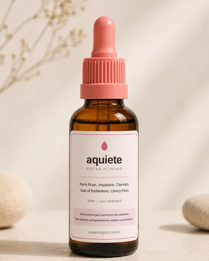

1 unidade
Frasco de 30 ml · uso sublingual
R$ 129,90
Subtotal R$ 129,90
Desconto — R$ 0,00
Frete Grátis
Frete grátis não vale para a sua região: o envio para o Norte é feito por transportadora e sai por R$ 19,99.
★★★★★
5,0 · 1.485 avaliações
Márcia N. Tô usando faz umas 6 semanas e minhas crises
ficaram muito mais leves.
Lourdes C. É o que eu pego na hora que o coração dispara.
É super fácil de usar.
Elaine B. Tenho 52 anos e não queria tomar mais remédio,
então resolvi testar. E não é que tá funcionando?
-
Dados protegidos por criptografia. Não guardamos informações de cartão.
-
Envio em até 2 dias úteis, com código de rastreio por e-mail.
-
30 dias para devolver o frasco lacrado. Condições.